Causality I
POL51
Juan F. Tellez
University of California, Davis
September 30, 2024
Plan for today
Why causality? And what is it?
Fake data
The problem with causality
Prediction vs. causality
Why predict
We don’t know what’s going to happen in the future
Or in places/cases where we don’t have data
Even if in cases where we have data – what’s our best guess?
We can use models to make decisions informed by patterns in the data
Prediction is for making decisions
World Bank: what would happen to Jamaica if their GDP went up by 10k? We can use models to make an educated guess
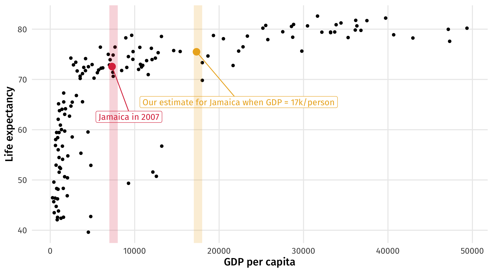Moving forward
- There are lots of prediction resources online
- Kaggle hosts prediction competitions with interesting data
- Give it a shot!
A turning point
First half of course
How to program, visualize data, modeling, relationships, etc.
Look at all the functions you “learned”:
group_by,tally,summarise,filter,mutate,%>%,distinct,lm,augment,tidy,ggplot,facet_wrap…
- There are thousands more!
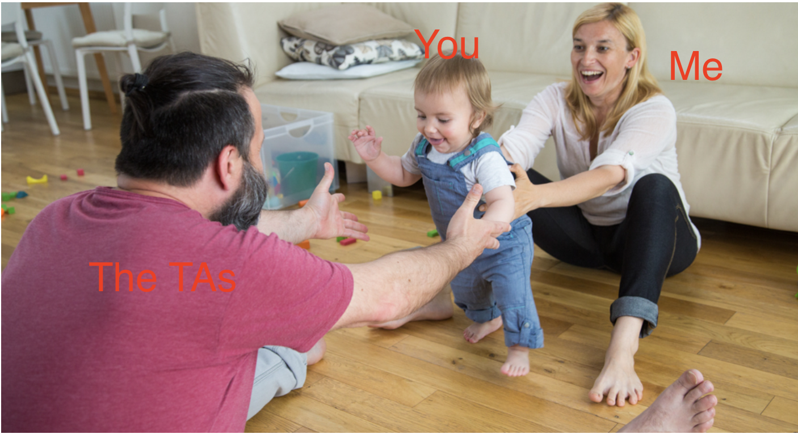
First half of course
Use models to estimate the relationship between X and Y:
# A tibble: 2 × 5
term estimate std.error statistic p.value
<chr> <dbl> <dbl> <dbl> <dbl>
1 (Intercept) 54.0 0.315 171. 0
2 gdpPercap 0.000765 0.0000258 29.7 3.57e-156But is this relationship causal? Would an increase in GDP cause an increase in life expectancy, on average?
Second half of the course
“How do we know if X causes y?”
Are our estimates causal? Academics fight about this all day!
This question is at center of causal inference
We will learn why it is so difficult to establish causality with data
We will also learn potential solutions
Many interesting questions are causal
International relations: do peace-keepers reduce conflict in countries emerging from civil war, or are they ineffective?
Comparative politics: do elections reduce or increase corruption?
American politics: do voter ID laws hurt general turnout?
But not all
Many of the interesting questions people want to answer with data are causal
Some are not:
Instagram might want to know: “Is there a person in this photo?”
But not care about what factors cause the picture to be a photo of a person
Depends on the question; most why questions are causal
The value of causality
One of our comparative advantages
Not just academic; companies, governments, NGOs also need to answer “why” questions
Does this policy work (or not)? Did it do what was intended? How effective or counterproductive was it?
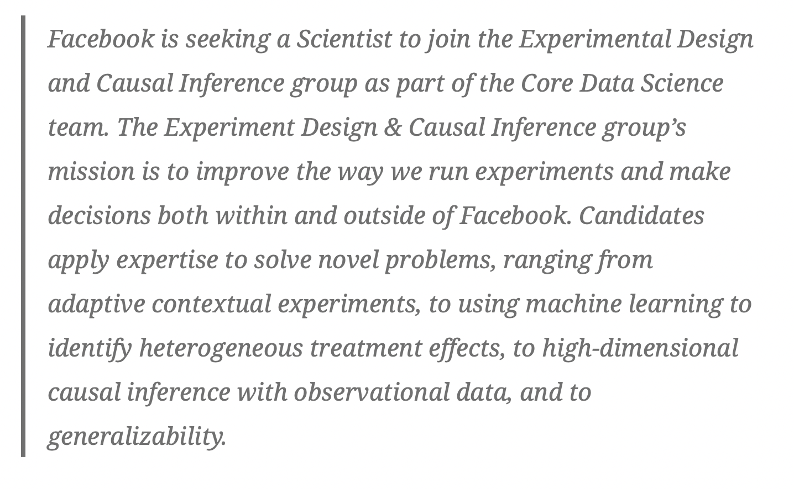
What do we mean by causality?
In this class, we say X causes Y if…
An intervention that changes the value of X produces a probabilistic change in Y
Intervention = X is being changed or altered
Probabilistic = Y should change, on average, but need not in every instance

Interventions and probability
How do the two parts of our definition fit here?
Aspirin causes a reduction in fever symptoms
Intervention = someone takes aspirin, we administer aspirin, we sneak it into someone’s food, etc.
Outcome = Taking aspirin doesn’t work 100% of the time; but in general, on average, more often than not, etc., taking aspirin \(\rightarrow\) less fever
What about this example? Democratic institutions reduce the incidence of interstate war
Terminology
We’ve seen this before:
| Variable | Meaning | Examples |
|---|---|---|
| Y | The thing that is affected by a treatment | Employment, turnout, violence |
| X | The thing changing an outcome | Min. wage laws, voter ID laws, peacekeepers |
The problem with causality
Obviously causal relationships
A heavier car has to work harder to get from A to B
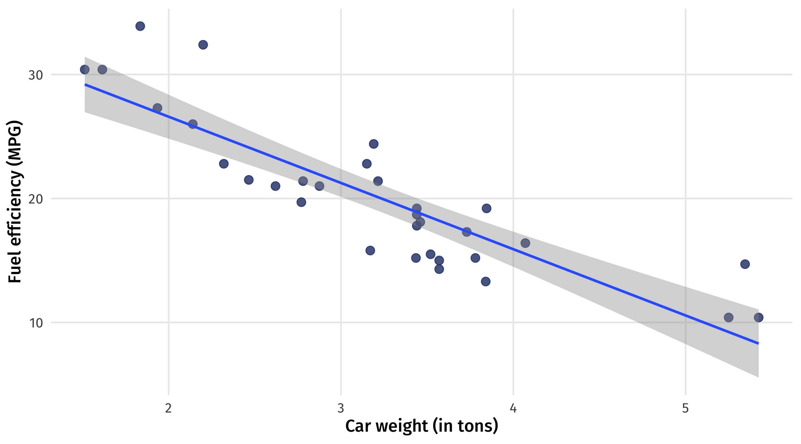Obviously causal relationships
A bigger house is more desirable
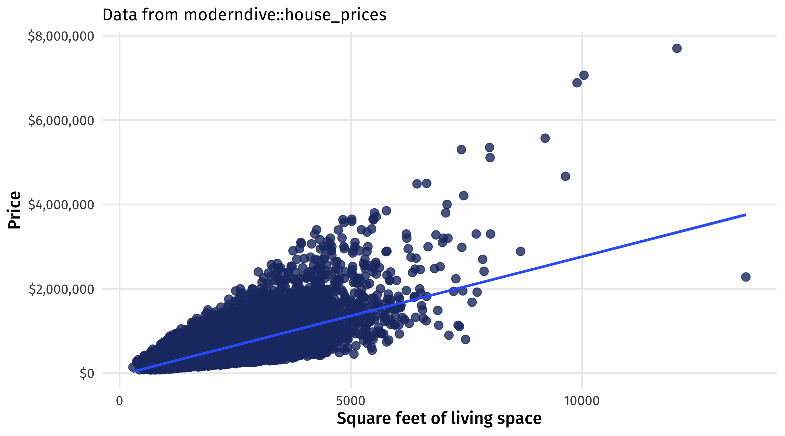Not obvious: education and earnings
- Positive correlation between education and earnings, yet
- People who are already wealthy (or likely to become wealthy) get more education than people who are not wealthy
- In other words: people self-select into education levels
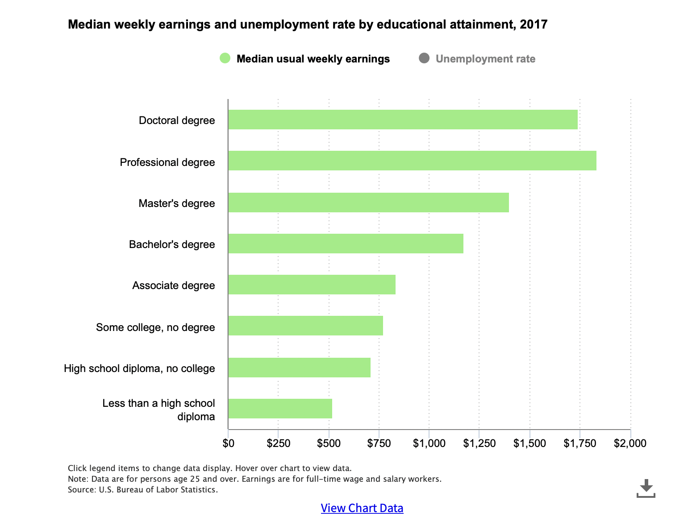
Not obvious: voter ID and turnout
States that pass these laws are different from states that don’t pass these laws
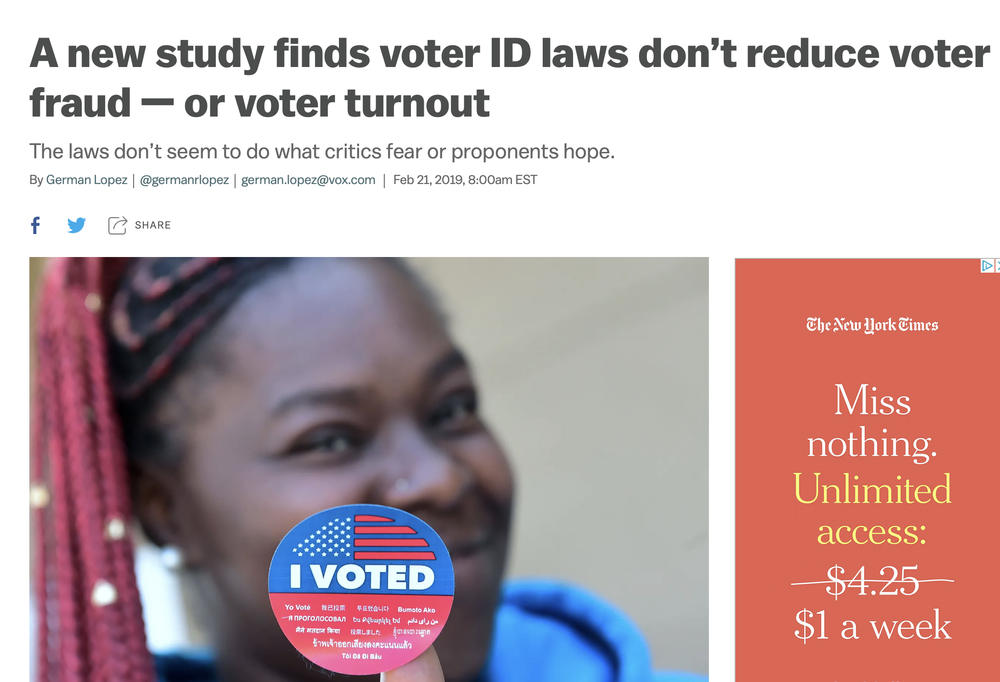Spurious correlation
To make matters worse, correlation is common-place in nature:
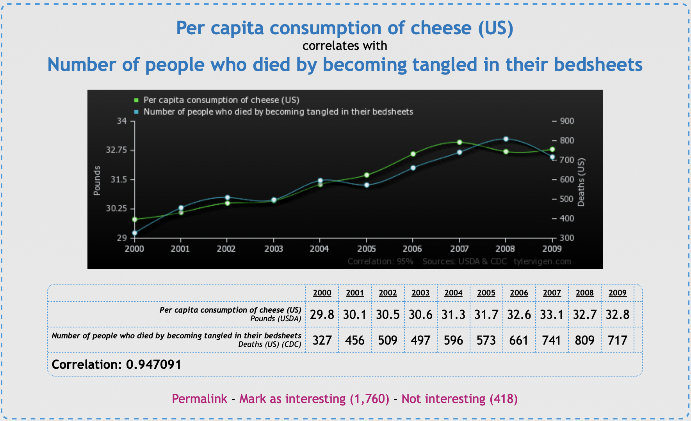The trouble with causality
We can’t directly observe a change in X causing a change in Y
This is true even in experiments, where we directly manipulate stuff
All we can see are correlations between X and Y
Some of those correlations are causal; some are not; how can we tell?
First step: yes, we can tell (sometimes)
Students are obsessed with “correlation does not mean causation”
But sometimes it does! that’s the tricky part
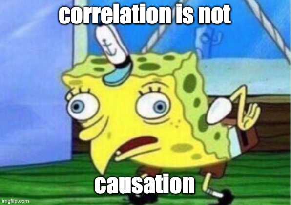Make up (simulate) data to convince ourselves
- A good way to see that we correlation can equal causation is to make up (simulate) data where we know that X causes Y
- We can make up data in R with the
rnorm()function rnorm()draws random numbers from a normal distribution- The numbers it makes up are pretty close to some mean, plus or minus a standard deviation
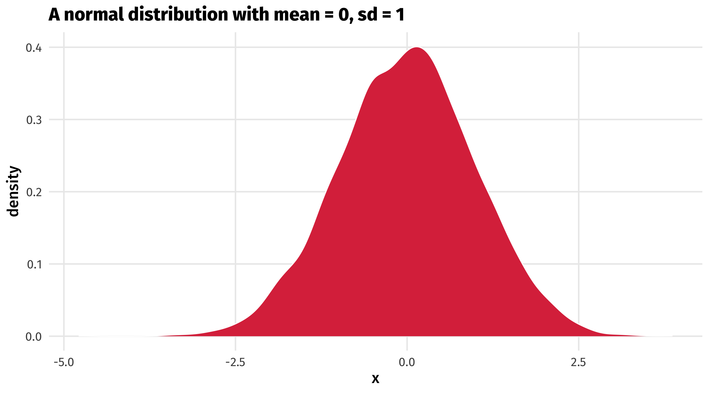
Drawing from a normal distribution
Generate 10 random numbers, most of which are +/- 2 away from 10:
[1] 11.004337 9.883146 12.011349 13.167754 11.311374 10.809138 13.301516
[8] 7.286678 8.691910 8.584861Generate 5 random numbers, most of which are +/- 10 away from 50:
Do winners keep winning?
Say we wanted to simulate data to show that doing well in elections (treatment) causes increases in campaign fundraising (outcome)
That is, that funders reward winners
First step is generating fake elections results (treatment)
Let’s say we have 500 fake elections that are pretty close to 50 (a tie), plus or minus 5 points
Faking (simulating) the treatment
We can use tibble() and rnorm() to simulate variables
elections (treatment) = 500 elections, vote share is 50% of the vote on average, +/- 5%
And we can plot it
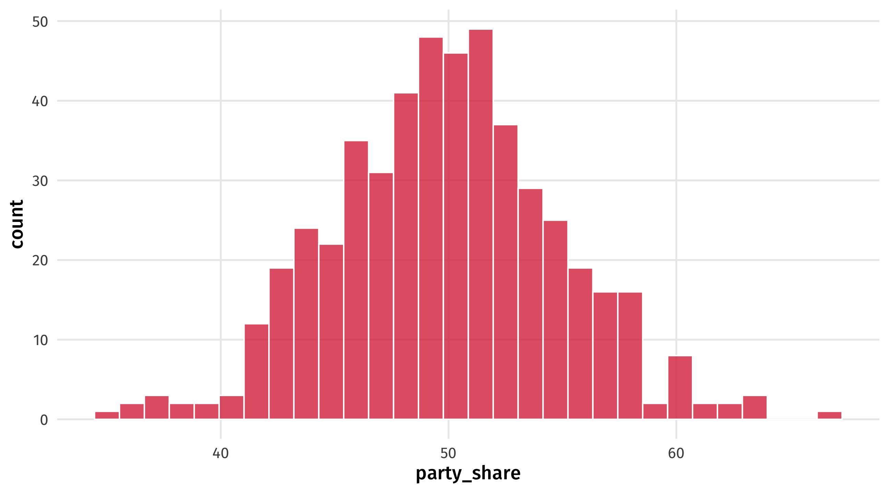Making the outcome
Next we want to make up campaign fundraising (outcome)
Let’s say parties raise about 20k on average, plus or minus 4k
fake_election = tibble(party_share = rnorm(n = 500, mean = 50, sd = 5),
funding = rnorm(n = 500, mean = 20000, sd = 4000))
fake_election# A tibble: 500 × 2
party_share funding
<dbl> <dbl>
1 62.2 14742.
2 47.2 17415.
3 52.0 12808.
4 55.6 21241.
5 54.2 25790.
6 49.6 22222.
7 59.9 23076.
8 64.3 16842.
9 47.0 29356.
10 46.5 18352.
# ℹ 490 more rowsAnd we can plot it
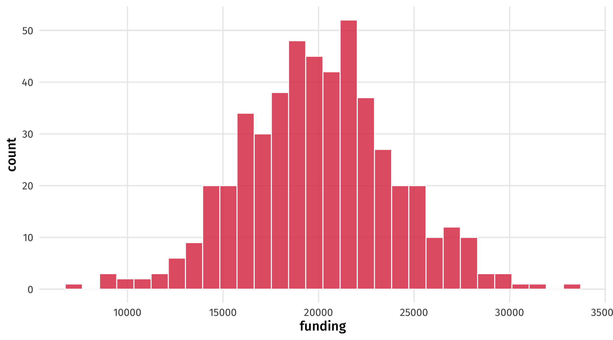Making X cause Y
We want to make it so that getting more votes increases campaign donations (winners attract funding)
Say for every percent of the vote a party gets, they get 2,000 (USD) more in donations
this is the causal effect of vote share (treatment) on campaign donations (outcome) \(\rightarrow\)
2,000 (USD) per percent of the vote a party gets in an election
Making X cause Y
We can do this in R like so:
fake_election = tibble(party_share = rnorm(n = 500, mean = 50, sd = 5),
funding = rnorm(n = 500, mean = 20000, sd = 4000) + 2000 * party_share)
fake_election# A tibble: 500 × 2
party_share funding
<dbl> <dbl>
1 56.9 127179.
2 46.5 107465.
3 48.5 115635.
4 46.6 111400.
5 48.5 118418.
6 45.2 117334.
7 48.9 117183.
8 55.7 134937.
9 60.0 141212.
10 56.1 135144.
# ℹ 490 more rowsAs an equation, this looks like: \(Donations_{i} = Party\_share_{i} \times 2000\)
Eyeballing it
Is our fake data convincing? We can plot it to see:
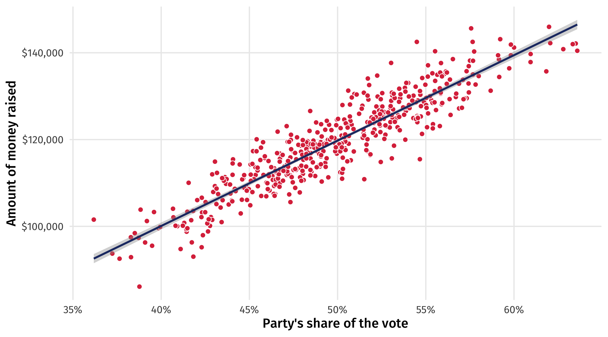Can we get the causal estimate back?
We know the effect of vote share on campaign donations: it’s 2k per percent of the vote
Can we use a model to get that estimate back?
Hope?
- There are at least some scenarios where X causes Y, and
- This effect will be reflected in the data
- And we can estimate the effect with a model

🕵️ Your turn: Michael Lacour 🕵️
- Lacour published a big study in Science
- Study showed talking to LGBT canvasser \(\rightarrow\) huge improvements in attitudes towards LGBT policy (gay marriage)
- Data was completely fabricated, using some of the same functions I showed you
🕵️ Your turn: Michael Lacour 🕵️
Using the steps I just went through above, make up some data that pre-confirms some pattern about the world you wish were true:
Change the treatment and outcome variables in the code to ones of your choosing
Alter the parameters in
rnorm()so the values make sense for your variables (e.g., what is a reasonable distribution for age?)Make a scatterplot with a trend line – use
labs()to help us make sense of the plot axes!Post your idea in Slack, winner (creativity + accuracy) will get small extra credit
15:00
So we (sometimes) can estimate causal effects
Where does it all go wrong then?
The Democratic Peace?
Does the spread of democracy reduce international conflict?
Theory: war is costly and the costs are borne by citizens; countries where citizens have more input \(\rightarrow\) less conflict
X here is whether the country is a democracy (versus autocracy)
Y is the number of wars the country is involved in
Ideal, imaginary approach: take a country, look at Y when democracy = 1, and then when democracy = 0
Do this for all countries, take the average
Potential outcomes
This magical world where we can compare the number of wars when a country is a democracy versus when it is not is called the potential outcomes
| country | democracy | war |
|---|---|---|
| Canada | 0 | 3 |
| Canada | 1 | 4 |
| China | 0 | 4 |
| China | 1 | 3 |
| USA | 0 | 1 |
| USA | 1 | 1 |
The fundamental problem of causality
In reality, we can only observe democracy at one value for each country
The US is a democracy, we can observe wars when democracy = 1, but not when democracy = 0
China is not a democracy, we can observe wars when democracy = 0, but not when democracy = 1
| country | democracy | war |
|---|---|---|
| Canada | 0 | 3 |
| Canada | 1 | 4 |
| China | 0 | 4 |
| China | 1 | 3 |
| USA | 0 | 1 |
| USA | 1 | 1 |
Potential vs. observed
We only observe the world on the right, but not the left
| country | democracy | war |
|---|---|---|
| Canada | 0 | 3 |
| Canada | 1 | 4 |
| China | 0 | 4 |
| China | 1 | 3 |
| USA | 0 | 1 |
| USA | 1 | 1 |
| country | democracy | war |
|---|---|---|
| Canada | 0 | NA |
| Canada | 1 | 4 |
| China | 0 | 4 |
| China | 1 | NA |
| USA | 0 | NA |
| USA | 1 | 1 |
The fundamental problem of causality
We have missing data on “what would have happened” had the US been an autocracy
“what would have happened” \(\rightarrow\) the counterfactual
Our goal in causal inference is to make as good a guess as possible as to what Y would have been had democracy = 0 instead of 1 (and vice versa)
Comparing apples and oranges
Why not just compare the number of wars for countries where democracy = 0 (autocracies) versus the countries where democracy = 1 (democracies)?
If democracies fight less, then democracy reduces conflict
Comparing apples and oranges
Implicitly, this means we are saying the countries that are autocracies are good counterfactuals for the countries that are democracies (and vice versa)
For instance, that China is a good counterfactual for the US
But China and the US are different in so many ways! They are not good counterfactuals of one another
We will see exactly why this is a problem in the following weeks
Why experiments work
In an experiment, we randomly expose participants to some treatment, while others are exposed to nothing (or a placebo)
| Person | Shown an ad? | Democrats thermometer |
|---|---|---|
| 1 | Yes | 14.34 |
| 2 | No | 9.2 |
| 3 | Yes | 99.85 |
| 4 | No | 38.9 |
| 5 | No | 52.15 |
We then compare the outcome of those who did and didn’t get the treatment
Why experiments work
Experiments have the same “problem” as the democracy and war example: we can’t observe the same person seeing and not seeing the ad
| Person | Shown an ad? | Democrats thermometer |
|---|---|---|
| 1 | Yes | 14.34 |
| 2 | No | 9.2 |
But since the experimental ad was randomly assigned, the people that did and didn’t see the ad are good counterfactuals of one another
it is, by definition, just as likely a person who received treatment could have instead received the control/placebo (note how this differs from democracy \(\rightarrow\) war)
The gold standard
This is why experiments are known as the gold standard of research
We have control over treatment, and we randomize it
With observational data that already exists in the world, we don’t have control over treatment, and we can’t randomize it
Experiments are great, but not feasible or ethical in most cases
So we’ll have to take other measures to try to overcome these problems with observational data
🧩 Your turn: counterfactuals 🧩
With neighbor, think through the counterfactual scenarios in these examples. What is the implicit counterfactual? What would a good counterfactual look like?
A study on whether international trade between two countries makes them more likely to form a defensive alliance.
A study on whether being a victim of a crime makes someone more supportive of authoritarian leaders
A study on whether those who served in the military are more likely to vote for “dovish” or “hawkish” candidates
A study on whether post-Dobbs abortion restrictions reduced abortions
10:00